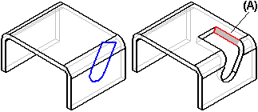
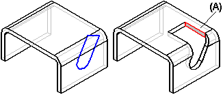

Sheet metal cutouts
When constructing sheet metal parts, you can construct cutouts using the Cutout command or a specialized Normal Cutout command. If the cutout you are constructing would result in thickness faces that are not perpendicular (A) to the sheet faces, you should consider using the Normal Cutout command.

When you use the Normal Cutout command to construct the cutout, the software creates thickness faces that are perpendicular (A) to the sheet faces.

Although the Cutout command would successfully construct the cutout, you might not be able to flatten the part later, or add features to the non-perpendicular faces. A normal cutout feature also better reflects that the feature would likely be manufactured while flat, then folded.
How do I
Construct a normal cutout in a sheet metal partConstruct a sheet metal cutout from an open profile
Construct a sheet metal cutout from a closed profile
Look up more details
Normal Cutout command (Sheet Metal environment)Normal Cutout command bar (Sheet Metal Environment)
Cut command
Cut command bar